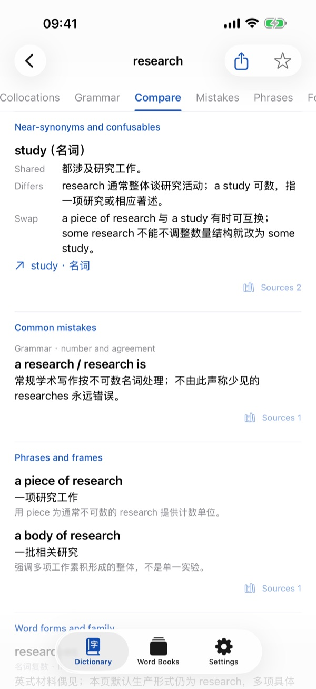
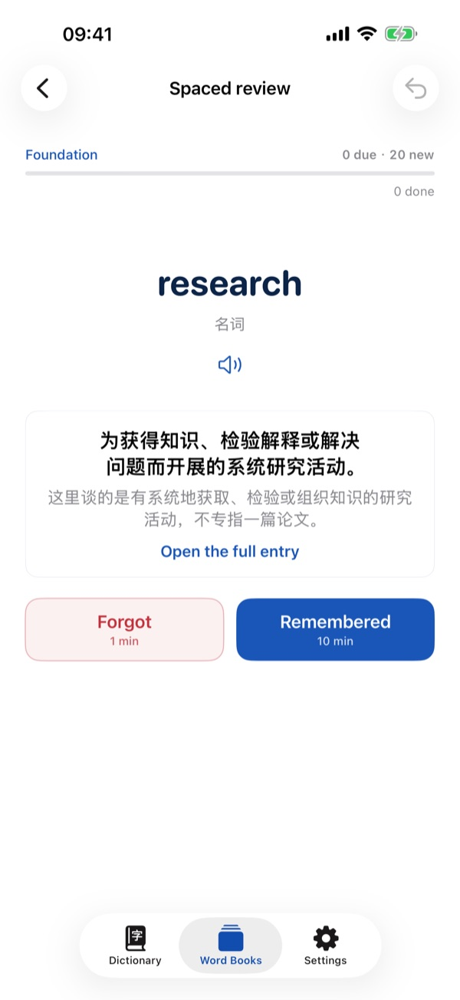

Every sense, fully explained
Meaning, sense boundaries, the everyday sense for contrast and related senses, arranged in sections you can jump between.
An academic English dictionary for iPhone and iPad
2,114 academic senses across Foundation, Intermediate and Advanced levels. Meaning, sense boundaries, original examples, collocations and common mistakes, all on one page.
Why senses
In academic writing a word usually carries just one of its meanings. Academic Blue Book gives every academic sense its own entry: what it means in academic contexts, and where it stops overlapping with everyday use and near-synonyms.
Meaning, sense boundaries, the everyday sense for contrast and related senses, arranged in sections you can jump between.
Each sense has two original example sentences with translations and usage notes, read aloud in an American or British voice.
When a near-synonym can replace it, when it can't, and the mistakes learners make most often.
A closer look


Review, when you want it
Review your favorites or any of the three level books. You choose how many new words to add each day; due reviews are never capped.
Privacy
Favorites and review progress are stored on your device. When you change devices, export a backup file and import it on the new one.
Read the privacy policyMeanings, examples and explanations were written for this project. Levels are editorial and are not a CEFR or exam rating. Every sense has been checked by its author and has not yet been externally reviewed. If you spot a problem, please let us know.